Lab 3 Report: Keypad Scanner
Introduction
In this lab, a design was implemented on the FPGA to read a 4x4 matrix keypad input and display the last two hexadecimal digits on a dual seven-segment display with the most recent entry always appearing on the right. The design made it so each key press was recorded only once independent of the press length. If multiple keys were held at the same time, only the last key held would be displayed.
Design and Testing Methodology
This design was achieved using a finite state machine (see Figures 1 and 2), where the state would change depending on the collected key inputs. The variable keyMap is the current key inputs, while initialKeyMap is a snapshot of the key inputs during teh display state. In the display state, displayEN is set high, which allows writing to the 7 segment display through flip-flops in the top-level module.
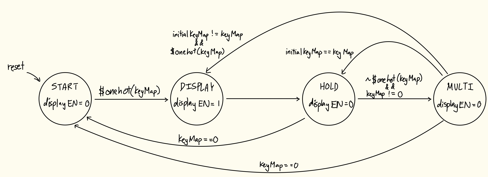
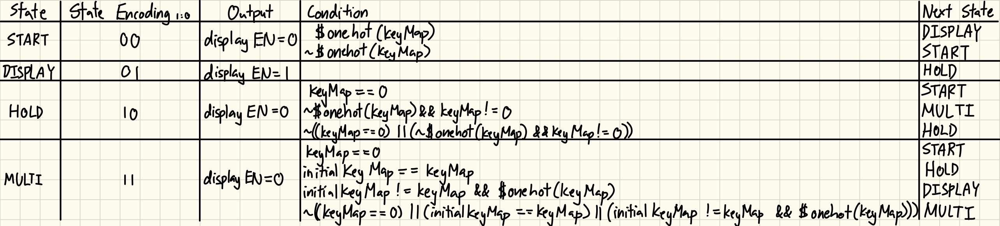
Like in the previous lab, key inputs were determined by “scanning” each row (sending a high bit to one row at a time) and collecting the column inputs. The column inputs were sent through a synchronizer to prevent reading metastable values. Besides the scan module, a keyMap module was developed to convert the corresponding row/column combination to a 16-bit key map.
The keypad switches were prone to switch bounce (the switch makes and breaks its connection repeatedly for up to ~10ms). To mitigate this issue and ensure each key was only registered once, a debouncer submodule was created, which used a shift register to compare the keymap at different intervals and only register the keys when all registers had the same value.
This debounced key map was an input to the FSM, a submodule converting the keys to equivalent switch inputs (which were sent into the 7-segment decoder from Lab 1).
The top level module wired all these submodules together, and had assign statements to compare counter values to provide the switching frequency for the 7-segment anodes, as well as a mux to determine which value to write to the left and right segments.
These modules were all tested using automatic testbenches, waveform simulation, and hardware deployment.
I think my debouncing strategy is more accurate and time efficient than other strategies. One other strategy I can think of is just waiting 10ms (maximum bouncing time) after the first button press before using the keyMap. However, this doesn’t guarantee that after you wait, the button is actually debounced - it could slightly fluctuate, or if your count is off by a little bit you would read and use the bounce. Adding a strategy of storing the initial read and comparing at the end of the wait time to confirm debouncing could work. However, if another button happens to activate during the 10ms wait time, that button could still bounce after the first button is done, so they you would have to wait again. Using the shift register method means you don’t have to have logic determining the first key press, or wait a specified amount of time. You always read until all registers log the same value.
However, the other strategies are probably more hardware efficient as I do use 9 flip-flops (probably could’ve used less, I was just being cautious), whereas the waiting strategy would just rely on a counter output that uses 1 flip-flop.
My design only includes 1 canonical FSM that evaluates the current debounced keyMap. I think another way to do achieve the end goal (with the alternative debouncing strategies described above) is to have a canonical FSM managing the display/scanning states communicate with another canonical FSM to control whether debouncing is active or not, or communicate with a non canonical FSM which is a counter to keep track of how long to wait for. However, I think this is more complicated and could make the overal FSM structure less reliable since switching or keeping states depend on more conditions that could be unexpected values right when the clock edge occurs, meaning you have to wait for the next cycle to actually transition correctly.
Technical Documentation
The source code for the project can be found in the associated GitHub repository.
Block Diagram
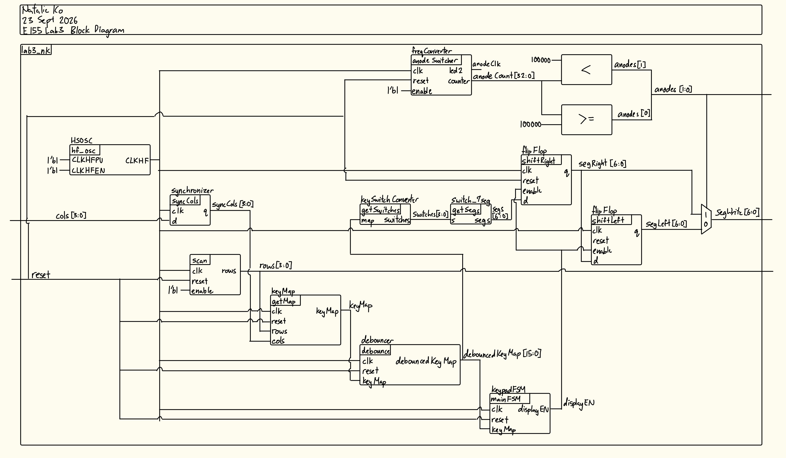
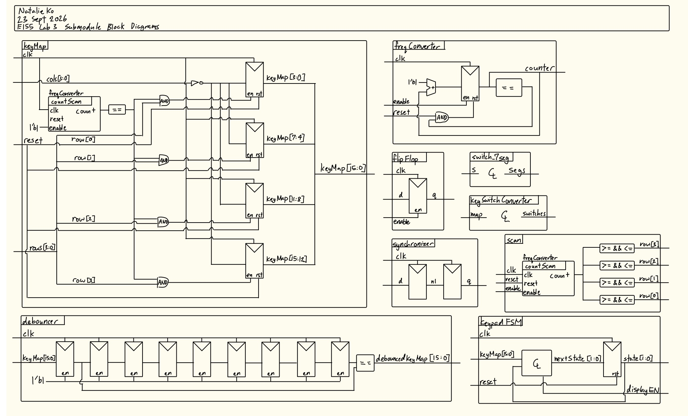
The block diagram in Figures 3 and 4shows the overall architecture of the design.
Schematic
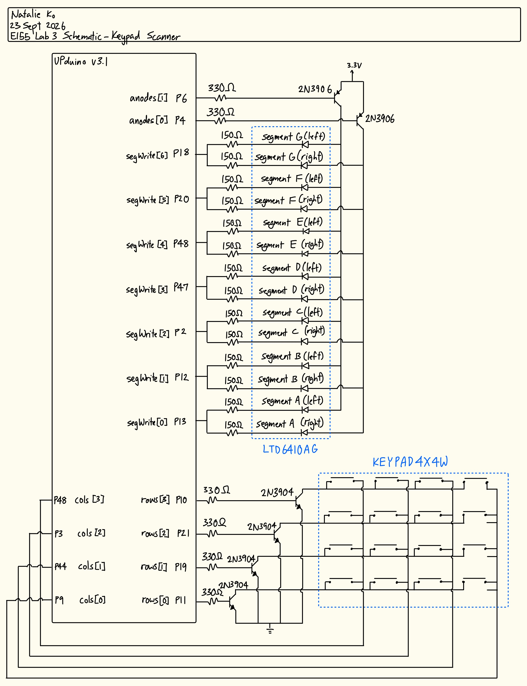
The schematic in Figure 5 shows the physical circuit connections outside the PCB. The only peripheral used on the PCB was the reset button.
Results and Discussion
The design met all intended design objectives.
Synthesizer Warnings
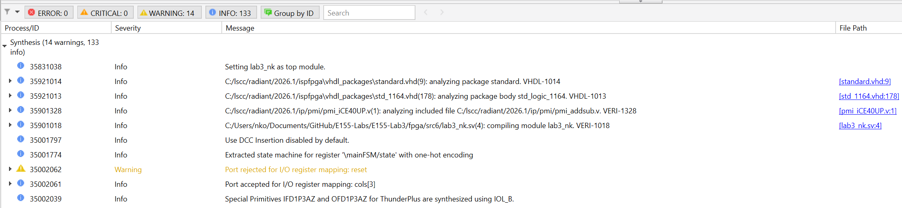
Radiant didn’t give me any errors, warnings of latches or tristate buffers etc. The only warning I got was that my ports were rejected, but these do not affect deployment.
Testbench Simulation
Figure 7 shows a screenshot of the QuestaSim simulation waveforms for my flip flop submodule. It behaved correctly because the output is always 1 clock rising edge behind the input when enabled. When disabled the output stops flowing, and when reset the output is set to 0. This was also confirmed by my automatic testbench (figure 8).
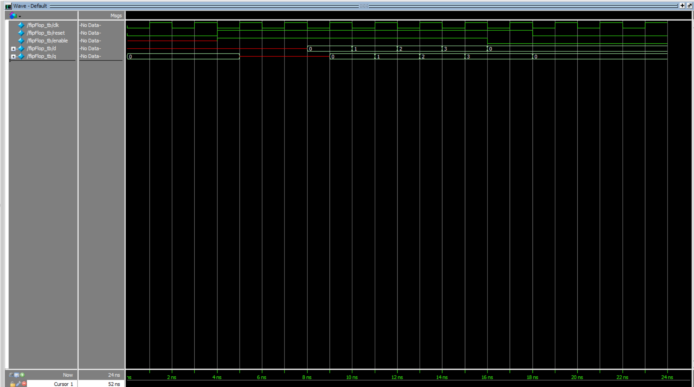
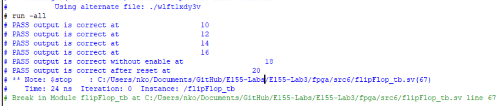
Figure 9 shows a screenshot of the QuestaSim simulation waveforms for my synchronizer submodule. It behaved correctly because the output is always 2 clock rising edges behind the input. This was also confirmed by my automatic testbench (figure 10).
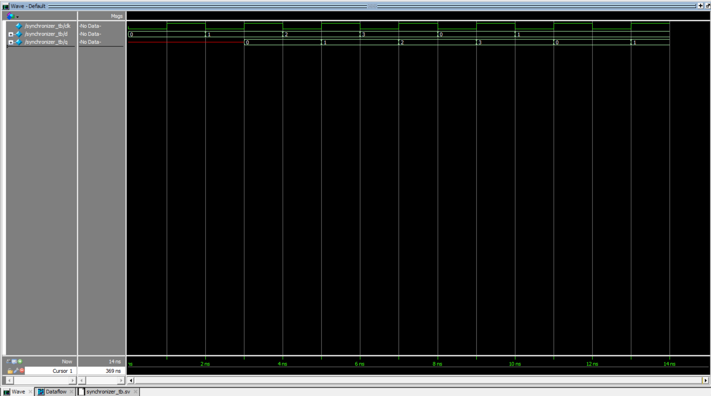
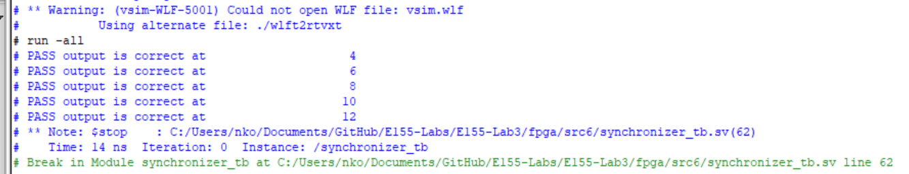
The scanning submodule was retested because it was slightly modified so it could be parametrized instead of only having a fixed scanning frequency. As shown in Figure 11, after each 1/8 clock cycle, the output rows were correct, including after a reset and after setting enable to low and then resetting again. This is also demonstrated by the automatic testbench outputs (see Figure 12).
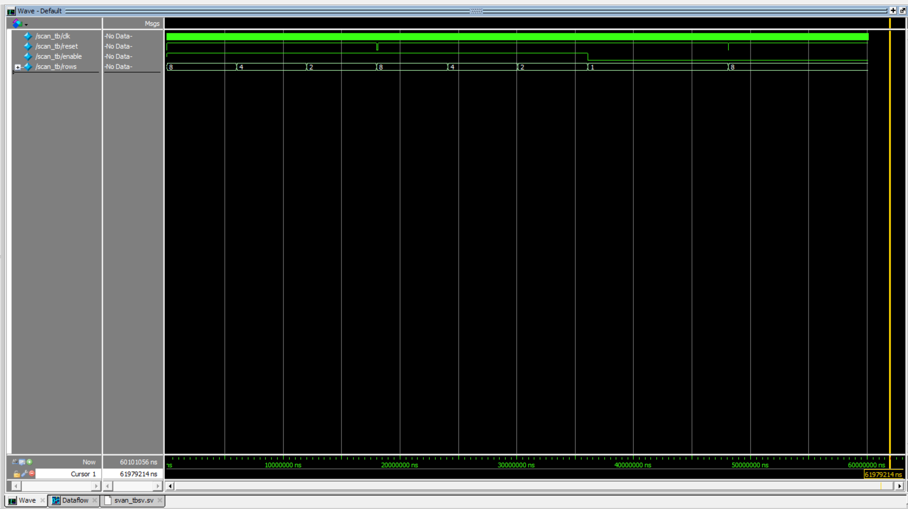
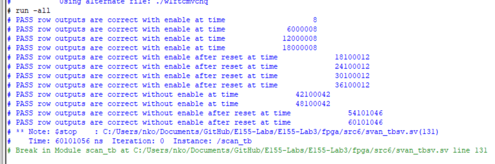
Figure 13 shows a screenshot of the QuestaSim simulation waveforms for my keymap submodule. When each of the rows were high, the column inputs were mapped to the keymap correctly with both single presses and multi presses. When reset was enabled, the keymap reset to all 0s. This was also confirmed by my automatic testbench (figure 14).
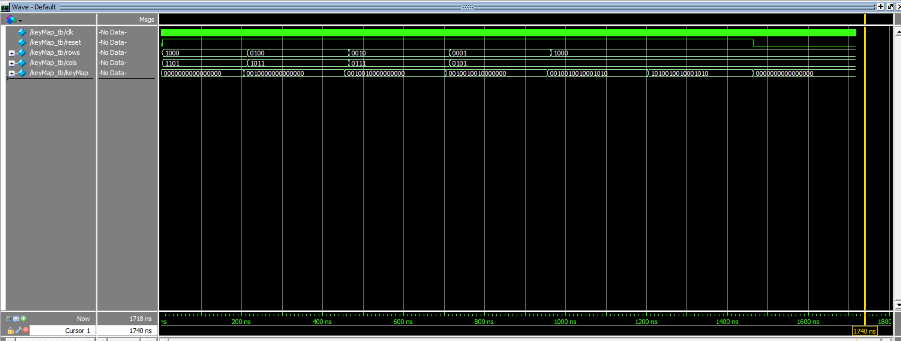
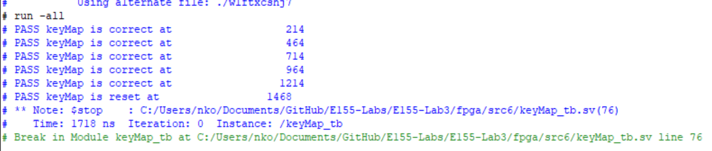
Figure 15 shows the QuestaSim simulation waveforms for the debounce submodule. It behaved correctly because after oscillating the keymap bits repeatedly, the output was only changed value after the input was constant. After toggling the reset, the output would not change. This was also confirmed by the automatic testbench (figure 16).
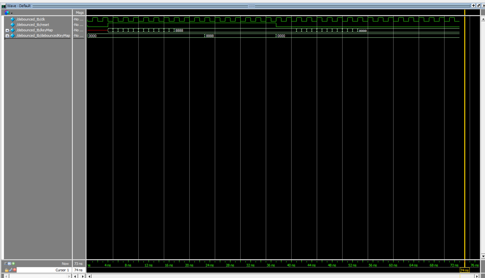
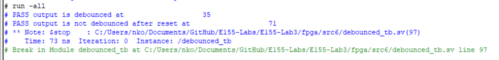
Figure 17 shows the QuestaSim simulation waveforms for the FSM. All state transitions (including the reset) and outputs were tested to work. This was also confirmed by the automatic testbench (figure 18).
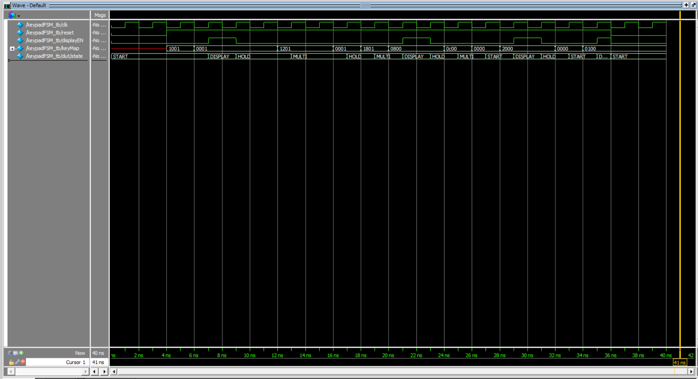
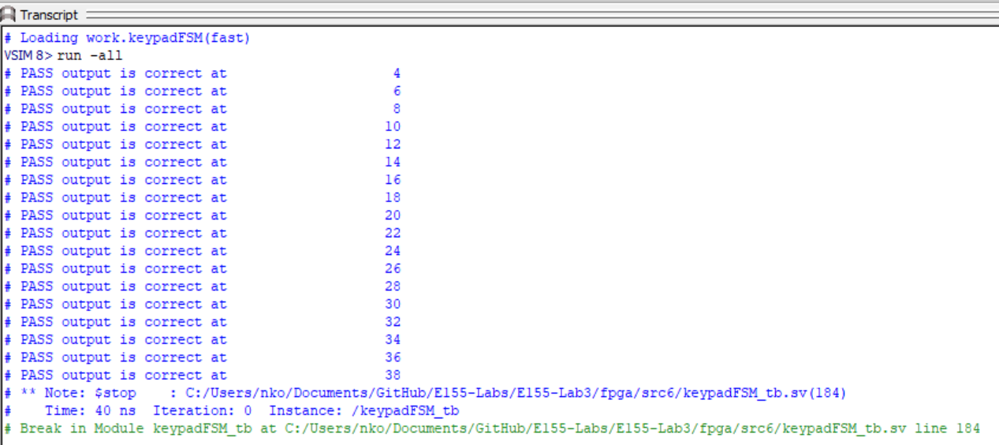
Figures 19 and 20 show the QuestaSim simulation waveforms and testbench output for the keymap to switch input converter. Each keymap combination was converted to the correct switch combination.
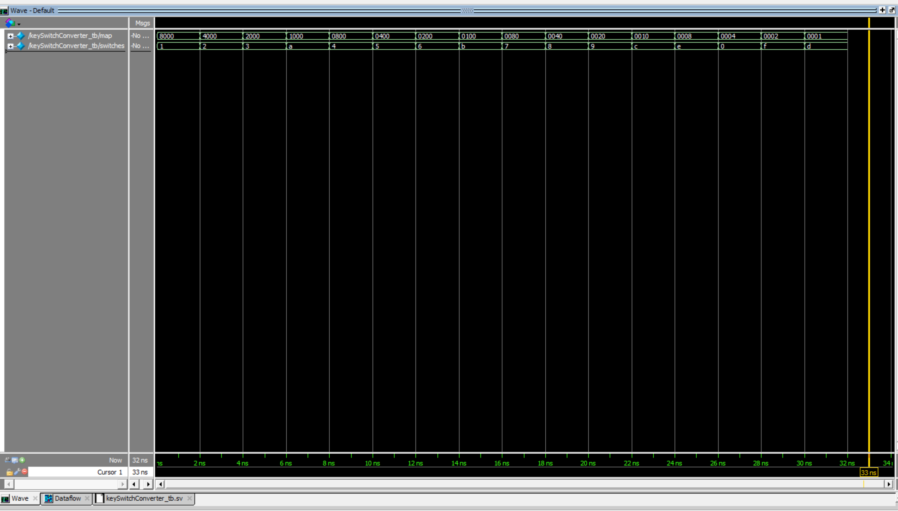
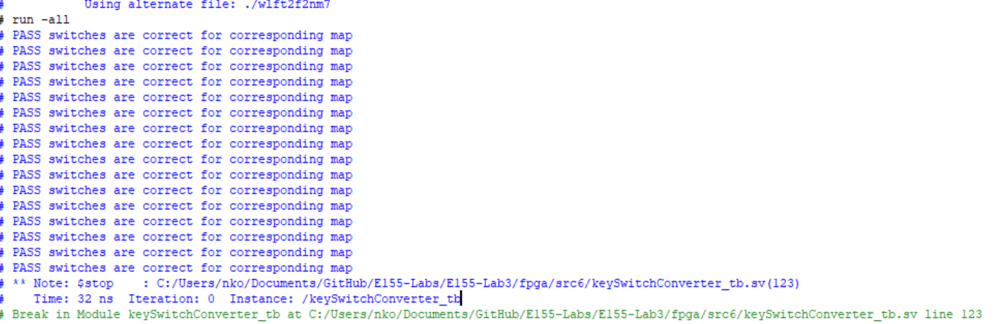
Figures 21 and 22 show the QuestaSim simulation waveforms and testench output for the top level module. The column inputs were bounced for 10ms, then were held high, only when that particular row was high. The anodes changed at the right time, and the segment outputs matched the column inputs after they were held high. The segments were reset to 0 and the anode reset to 2’b10 when the reset was toggled.
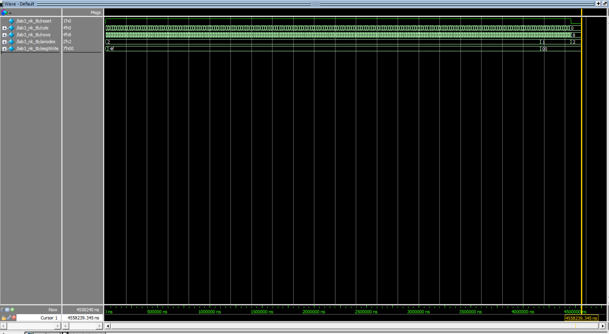
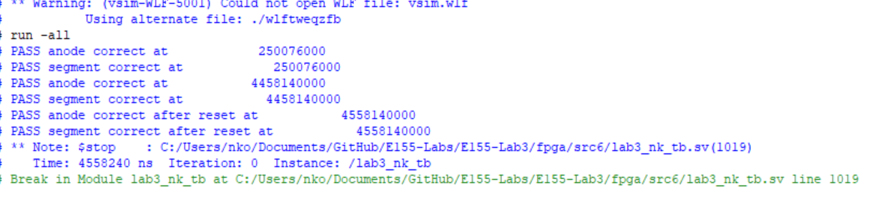
Hardware Deployment
Video showcasing the design running on hardware.
Conclusion
The design successfully scanned a 4x4 matrix keypad and mapped the last two inputs to a dual 7-segment display, accounting for single and multi-key presses.
I spent over 86 hours on this lab.
AI Prototype Summary
// File: clk_gen.sv
// Generates single-cycle enable pulses from the HFOSC master clock.
module clk_gen #(
parameter int CLK_FREQ = 24_000_000, // 24 MHz HFOSC clock
parameter int SCAN_HZ = 200, // 200 Hz scan clock (~5ms period)
parameter int MUX_HZ = 1000 // 1 kHz multiplexing clock (~1ms period)
)(
input logic clk,
input logic rst_n,
output logic scan_tick, // Pulse active for 1 cycle at SCAN_HZ
output logic mux_tick // Pulse active for 1 cycle at MUX_HZ
);
localparam int SCAN_LIMIT = CLK_FREQ / SCAN_HZ;
localparam int MUX_LIMIT = CLK_FREQ / MUX_HZ;
int count_scan;
int count_mux;
// Scan tick generator (~200 Hz)
always_ff @(posedge clk or negedge rst_n) begin
if (!rst_n) begin
count_scan <= 0;
scan_tick <= 1'b0;
end else begin
if (count_scan >= SCAN_LIMIT - 1) begin
count_scan <= 0;
scan_tick <= 1'b1;
end else begin
count_scan <= count_scan + 1;
scan_tick <= 1'b0;
end
end
end
// Display multiplexing tick generator (~1 kHz)
always_ff @(posedge clk or negedge rst_n) begin
if (!rst_n) begin
count_mux <= 0;
mux_tick <= 1'b0;
end else begin
if (count_mux >= MUX_LIMIT - 1) begin
count_mux <= 0;
mux_tick <= 1'b1;
end else begin
count_mux <= count_mux + 1;
mux_tick <= 1'b0;
end
end
end
endmodule
// File: keypad_scanner.sv
// Scans a 4x4 active-low keypad and emits a single-cycle valid pulse per press.
module keypad_scanner (
input logic clk,
input logic rst_n,
input logic scan_tick, // ~200 Hz pulse
input logic [3:0] rows, // Active-low inputs from keypad
output logic [3:0] cols, // Active-low driven column outputs
output logic [3:0] key_code, // Decoded 4-bit Hex Value (0x0 - 0xF)
output logic key_valid // 1-cycle pulse when key is registered
);
typedef enum logic [1:0] {
SCAN, // Continuously scan columns
REGISTER, // Capture valid key code (1 cycle pulse)
WAIT_RELEASE// Hold state until all keys are released
} state_t;
state_t state;
logic [1:0] col_idx;
logic [3:0] active_rows;
logic [3:0] detected_key;
logic key_pressed;
// Active-low column pattern: only one column is driven LOW at a time
assign cols = ~(4'b0001 << col_idx);
// Synchronize and invert rows (1 = pressed)
assign active_rows = ~rows;
// Determine if any key in the active column is pressed
assign key_pressed = (active_rows != 4'b0000);
// Row decoder logic
always_comb begin
case (active_rows)
4'b0001: detected_key = {col_idx, 2'b00}; // Row 0 -> Hex offset 0
4'b0010: detected_key = {col_idx, 2'b01}; // Row 1 -> Hex offset 1
4'b0100: detected_key = {col_idx, 2'b10}; // Row 2 -> Hex offset 2
4'b1000: detected_key = {col_idx, 2'b11}; // Row 3 -> Hex offset 3
default: detected_key = 4'h0; // Handle multi-key/invalid
endcase
end
// FSM and Column Stepping Logic
always_ff @(posedge clk or negedge rst_n) begin
if (!rst_n) begin
state <= SCAN;
col_idx <= '0;
key_code <= '0;
key_valid <= 1'b0;
end else begin
key_valid <= 1'b0; // Default pulse low
if (scan_tick) begin
case (state)
SCAN: begin
if (key_pressed) begin
key_code <= detected_key;
key_valid <= 1'b1;
state <= WAIT_RELEASE;
end else begin
col_idx <= col_idx + 1'b1; // Advance to next column
end
end
WAIT_RELEASE: begin
// Wait until all columns read zero active rows
if (!key_pressed) begin
col_idx <= col_idx + 1'b1;
// Check if we completed a full 4-col scan with no keys down
if (col_idx == 2'b11) begin
state <= SCAN;
end
end else begin
// Reset full release check if a key is still detected
col_idx <= col_idx + 1'b1;
end
end
default: state <= SCAN;
endcase
end
end
end
endmodule
// File: seven_seg_mux.sv
// Time-multiplexed driver for a dual 7-segment display (Common Anode).
module seven_seg_mux (
input logic clk,
input logic rst_n,
input logic mux_tick, // ~1 kHz refresh pulse
input logic [3:0] digit_high, // Older hex digit (Left)
input logic [3:0] digit_low, // Newest hex digit (Right)
output logic [1:0] digit_sel, // Active-low digit anode selects
output logic [6:0] seg // Active-low segments [a,b,c,d,e,f,g]
);
logic active_digit;
logic [3:0] current_nibble;
// Toggle active digit at 1 kHz
always_ff @(posedge clk or negedge rst_n) begin
if (!rst_n) begin
active_digit <= 1'b0;
end else if (mux_tick) begin
active_digit <= ~active_digit;
end
end
// Select active nibble and digit strobe line
always_comb begin
if (active_digit == 1'b0) begin
digit_sel = 2'b10; // Enable Digit 0 (Right / Most recent)
current_nibble = digit_low;
end else begin
digit_sel = 2'b01; // Enable Digit 1 (Left / Older)
current_nibble = digit_high;
end
end
// Hex to 7-Segment Decoder (Active-LOW outputs: 0 = LED On)
// Map order: [a, b, c, d, e, f, g]
always_comb begin
case (current_nibble)
4'h0: seg = 7'b000_0001;
4'h1: seg = 7'b100_1111;
4'h2: seg = 7'b001_0010;
4'h3: seg = 7'b000_0110;
4'h4: seg = 7'b100_1100;
4'h5: seg = 7'b010_0100;
4'h6: seg = 7'b010_0000;
4'h7: seg = 7'b000_1111;
4'h8: seg = 7'b000_0000;
4'h9: seg = 7'b000_0100;
4'hA: seg = 7'b000_1000;
4'hB: seg = 7'b110_0000;
4'hC: seg = 7'b011_0001;
4'hD: seg = 7'b100_0010;
4'hE: seg = 7'b011_0000;
4'hF: seg = 7'b011_1000;
default: seg = 7'b111_1111; // Blank
endcase
end
endmodule
// File: top.sv
// Top-level module for Lattice iCE40 UP5K
module top (
input logic ext_rst_n, // External active-low reset button
input logic [3:0] kp_rows, // Keypad row inputs
output logic [3:0] kp_cols, // Keypad column outputs
output logic [1:0] digit_sel, // Display digit selector (Active-low anode)
output logic [6:0] seg // Display segment driver (Active-low cathodic)
);
// Internal High-Speed Oscillator Signal
logic clk;
// Instantiate Lattice iCE40 Primitive Oscillator
// CLKF = 2'b00 configures output frequency to ~24 MHz
SB_HFOSC #(
.CLKHF_DIV("0b01") // 24 MHz output setting
) hf_osc_inst (
.CLKHFPU(1'b1), // Power-up oscillator
.CLKHFEN(1'b1), // Enable clock output
.CLKHF (clk) // Output clock net
);
// Control and Data Signals
logic scan_tick;
logic mux_tick;
logic [3:0] new_key;
logic key_valid;
// Shift Register for Key History
logic [3:0] key_digit_recent;
logic [3:0] key_digit_older;
// Clock and Timing Generator
clk_gen #(
.CLK_FREQ(24_000_000),
.SCAN_HZ(200),
.MUX_HZ(1000)
) u_clk_gen (
.clk (clk),
.rst_n (ext_rst_n),
.scan_tick (scan_tick),
.mux_tick (mux_tick)
);
// Matrix Keypad Controller
keypad_scanner u_keypad (
.clk (clk),
.rst_n (ext_rst_n),
.scan_tick (scan_tick),
.rows (kp_rows),
.cols (kp_cols),
.key_code (new_key),
.key_valid (key_valid)
);
// Shift memory: Update history upon valid key registration
always_ff @(posedge clk or negedge ext_rst_n) begin
if (!ext_rst_n) begin
key_digit_recent <= 4'h0;
key_digit_older <= 4'h0;
end else if (key_valid) begin
key_digit_older <= key_digit_recent;
key_digit_recent <= new_key;
end
end
// Dual 7-Segment Display Driver
seven_seg_mux u_display (
.clk (clk),
.rst_n (ext_rst_n),
.mux_tick (mux_tick),
.digit_high (key_digit_older),
.digit_low (key_digit_recent),
.digit_sel (digit_sel),
.seg (seg)
);
endmoduleWhen I synthesized this code in Radiant, I got the error Instantiating unknown module SB_HFOSC, and the LLM was really against changing this. After I kept insisting it didn’t work, it finally changed it to the HSOSC we used. However, it kept thinking 1'b1 was instead 1'me and refused to change this. Additionally, Radiant said the register driving the keypad was stuck at 0, and the LLM didn’t think anything was wrong, so it wouldn’t change anything.
// Target Device: Lattice iCE40 UP5K FPGA
// Function: 4x4 Keypad Scanner, Debouncer, and One-Shot Key Registration FSM
module keypad_one_shot #(
parameter int CLK_FREQ_HZ = 12_000_000, // Default SB_HFOSC / 4 (~12 MHz)
parameter int DEBOUNCE_MS = 10 // Debounce delay per scan step (~10 ms)
)(
input logic clk, // System clock
input logic rst_n, // Active-low asynchronous reset
input logic [3:0] col_pad, // Inputs from Keypad Columns (active-low with pull-ups)
output logic [3:0] row_pad, // Outputs to Keypad Rows (driven low sequentially)
output logic [3:0] key_code, // Registered 4-bit hex value (0x0 - 0xF)
output logic new_key_valid // 1-cycle strobe when a new key is captured
);
// =========================================================================
// 1. Clock Divider / Tick Generator for Debounce & Scan Speed
// =========================================================================
localparam int TICK_COUNT_MAX = (CLK_FREQ_HZ / 1000) * DEBOUNCE_MS;
localparam int TICK_CNT_WIDTH = $clog2(TICK_COUNT_MAX);
logic [TICK_CNT_WIDTH-1:0] tick_cnt;
logic scan_tick;
always_ff @(posedge clk or negedge rst_n) begin
if (!rst_n) begin
tick_cnt <= '0;
scan_tick <= 1'b0;
end else begin
scan_tick <= 1'b0;
if (tick_cnt >= TICK_COUNT_MAX - 1) begin
tick_cnt <= '0;
scan_tick <= 1'b1;
end else begin
tick_cnt <= tick_cnt + 1'b1;
end
end
end
// =========================================================================
// 2. Row Scanning Logic (Active-Low Driving)
// =========================================================================
logic [1:0] row_idx;
// Convert 2-bit counter into active-low 1-of-4 row drive pattern
assign row_pad = ~(4'b0001 << row_idx);
// =========================================================================
// 3. Column Key Code Decoding
// =========================================================================
logic col_active;
logic [1:0] col_idx;
// Detect if any key in the current scanned row is pressed (col input is LOW)
always_comb begin
case (col_pad)
4'b1110: begin col_active = 1'b1; col_idx = 2'd0; end
4'b1101: begin col_active = 1'b1; col_idx = 2'd1; end
4'b1011: begin col_active = 1 me1; col_idx = 2'd2; end // 4'b1011
4'b0111: begin col_active = 1'b1; col_idx = 2'd3; end
default: begin col_active = 1'b0; col_idx = 2'd0; end
endcase
end
// Hex Lookup Table mapping Matrix Position {Row, Col} to standard Hex Keypad values
// [R0 C0..C3] -> 1, 2, 3, A
// [R1 C0..C3] -> 4, 5, 6, B
// [R2 C0..C3] -> 7, 8, 9, C
// [R3 C0..C3] -> 0, F, E, D
logic [3:0] decoded_key;
always_comb begin
case ({row_idx, col_idx})
4'h0: decoded_key = 4'h1;
4'h1: decoded_key = 4'h2;
4'h2: decoded_key = 4'h3;
4'h3: decoded_key = 4'hA;
4'h4: decoded_key = 4'h4;
4'h5: decoded_key = 4'h5;
4'h6: decoded_key = 4'h6;
4'h7: decoded_key = 4'hB;
4'h8: decoded_key = 4'h7;
4'h9: decoded_key = 4'h8;
4'hA: decoded_key = 4'h9;
4'hB: decoded_key = 4'hC;
4'hC: decoded_key = 4'h0;
4'hD: decoded_key = 4'hF;
4'hE: decoded_key = 4'hE;
4'hF: decoded_key = 4'hD;
endcase
end
// =========================================================================
// 4. One-Shot Debounce and Key-Lockout FSM
// =========================================================================
typedef enum logic [1:0] {
ST_IDLE = 2'b00,
ST_DEBOUNCE = 2'b01,
ST_CAPTURE = 2'b11,
ST_WAIT_RELEASE = 2'b10
} state_e;
state_e state;
logic [1:0] captured_row;
logic [1:0] captured_col;
always_ff @(posedge clk or negedge rst_n) begin
if (!rst_n) begin
state <= ST_IDLE;
row_idx <= '0;
key_code <= '0;
new_key_valid <= 1'b0;
captured_row <= '0;
captured_col <= '0;
end else begin
// Default output strobe clear
new_key_valid <= 1'b0;
if (scan_tick) begin
case (state)
// Continuous scanning state until a key press is detected
ST_IDLE: begin
if (col_active) begin
captured_row <= row_idx;
captured_col <= col_idx;
state <= ST_DEBOUNCE;
end else begin
row_idx <= row_idx + 1'b1;
end
end
// Wait 1 scan tick period to verify stability
ST_DEBOUNCE: begin
// Check if the same key position is still active
if (col_active && (row_idx == captured_row) && (col_idx == captured_col)) begin
state <= ST_CAPTURE;
end else begin
// False trigger / bounce, return to scan
row_idx <= row_idx + 1'b1;
state <= ST_IDLE;
end
end
// Assert single-cycle strobe output and save key code
ST_CAPTURE: begin
key_code <= decoded_key;
new_key_valid <= 1'b1; // Glitch-free registered output
state <= ST_WAIT_RELEASE;
end
// Multi-key lockout: Keep scanning rows, but refuse new input until ALL keys released
ST_WAIT_RELEASE: begin
row_idx <= row_idx + 1'b1;
if (!col_active) begin
// Check if a full scanning cycle across all 4 rows shows no active keys
if (row_idx == 2'd3) begin
state <= ST_IDLE;
end
end
end
default: state <= ST_IDLE;
endcase
end
end
end
endmodule
// Target Device: Lattice iCE40 UP5K FPGA
// Function: 4x4 Keypad Scanner and Row Sampler with Active-Low I/O
module keypad_scanner #(
parameter int CLK_FREQ_HZ = 12_000_000, // Default system clock frequency (12 MHz)
parameter int SCAN_FREQ_HZ = 1_000 // Scan step frequency (1 kHz -> 1 ms per column)
)(
input logic clk, // System clock
input logic rst_n, // Active-low asynchronous reset
input logic [3:0] row_pad, // Rows from Keypad (Inputs, Active-Low with Pull-ups)
output logic [3:0] col_pad, // Columns to Keypad (Outputs, Driven Active-Low)
output logic [3:0] key_code, // Decoded Hex Key Value (0x0 - 0xF)
output logic key_pressed // High whenever a key is currently held down
);
// =========================================================================
// 1. Clock Divider for Column Scanning
// =========================================================================
localparam int CLK_DIV_MAX = CLK_FREQ_HZ / SCAN_FREQ_HZ;
localparam int CLK_DIV_W = $clog2(CLK_DIV_MAX);
logic [CLK_DIV_W-1:0] clk_cnt;
logic scan_tick;
always_ff @(posedge clk or negedge rst_n) begin
if (!rst_n) begin
clk_cnt <= '0;
scan_tick <= 1'b0;
end else begin
scan_tick <= 1'b0;
if (clk_cnt >= CLK_DIV_MAX - 1) begin
clk_cnt <= '0;
scan_tick <= 1'b1;
end else begin
clk_cnt <= clk_cnt + 1'b1;
end
end
end
// =========================================================================
// 2. Input Synchronizer for Row Pads (Metastability Protection)
// =========================================================================
logic [3:0] row_sync_0, row_sync_1;
always_ff @(posedge clk or negedge rst_n) begin
if (!rst_n) begin
row_sync_0 <= 4'b1111;
row_sync_1 <= 4'b1111;
end else begin
row_sync_0 <= row_pad;
row_sync_1 <= row_sync_0;
end
end
// =========================================================================
// 3. FSM State Definition & Keypad Scan Logic
// =========================================================================
typedef enum logic [1:0] {
COL_0 = 2'd0,
COL_1 = 2'd1,
COL_2 = 2'd2,
COL_3 = 2'd3
} scan_state_e;
scan_state_e col_state;
// Active-Low Column Drive Pattern
always_comb begin
case (col_state)
COL_0: col_pad = 4'b1110;
COL_1: col_pad = 4'b1101;
COL_2: col_pad = 4'b1011;
COL_3: col_pad = 4'b0111;
default: col_pad = 4'b1111;
endcase
end
// Active-Low Row Detection
logic row_active;
logic [1:0] active_row_idx;
always_comb begin
case (row_sync_1)
4'b1110: begin row_active = 1'b1; active_row_idx = 2'd0; end
4'b1101: begin row_active = 1'b1; active_row_idx = 2'd1; end
4'b1011: begin row_active = 1'b1; active_row_idx = 2'd2; end
4'b0111: begin row_active = 1'b1; active_row_idx = 2'd3; end
default: begin row_active = 1'b0; active_row_idx = 2'd0; end
endcase
end
// Standard 4x4 Keypad Decoding
// [Row 0]: 1, 2, 3, A
// [Row 1]: 4, 5, 6, B
// [Row 2]: 7, 8, 9, C
// [Row 3]: 0, F, E, D
logic [3:0] decoded_hex;
always_comb begin
case ({active_row_idx, col_state})
4'h0: decoded_hex = 4'h1;
4'h1: decoded_hex = 4'h2;
4'h2: decoded_hex = 4'h3;
4'h3: decoded_hex = 4'hA;
4'h4: decoded_hex = 4'h4;
4'h5: decoded_hex = 4'h5;
4'h6: decoded_hex = 4'h6;
4'h7: decoded_hex = 4'hB;
4'h8: decoded_hex = 4'h7;
4'h9: decoded_hex = 4'h8;
4'hA: decoded_hex = 4'h9;
4'hB: decoded_hex = 4'hC;
4'hC: decoded_hex = 4'h0;
4'hD: decoded_hex = 4'hF;
4'hE: decoded_hex = 4'hE;
4'hF: decoded_hex = 4'hD;
endcase
end
// =========================================================================
// 4. Sequential State Machine and Key Latch
// =========================================================================
always_ff @(posedge clk or negedge rst_n) begin
if (!rst_n) begin
col_state <= COL_0;
key_code <= 4'h0;
key_pressed <= 1'b0;
end else begin
if (scan_tick) begin
if (row_active) begin
// Key detected on current active column: capture code & stop cycling
key_code <= decoded_hex;
key_pressed <= 1'b1;
end else begin
// Advance to next column scan state
case (col_state)
COL_0: col_state <= COL_1;
COL_1: col_state <= COL_2;
COL_2: col_state <= COL_3;
COL_3: col_state <= COL_0;
default: col_state <= COL_0;
endcase
// Clear pressed status if completing full cycle with no active keys
if (col_state == COL_3) begin
key_pressed <= 1 me0;
end
end
end
end
end
endmodule
// Target Device: Lattice iCE40 UP5K FPGA
// Module: Top-Level Keypad Scanner & Dual 7-Segment Multiplexed Display
module top_keypad_display (
input logic rst_n, // Active-low external reset (e.g., pushbutton)
input logic [3:0] row_pad, // Keypad row inputs (active-low with pull-ups)
output logic [3:0] col_pad, // Keypad column outputs (driven low sequentially)
output logic [1:0] digit_select, // Digit select lines (active-low for PNP/P-FET drivers)
output logic [6:0] segments // 7-segment cathode drivers [a, b, c, d, e, f, g]
);
// =========================================================================
// 1. Lattice iCE40 UP5K Internal Oscillator Primitive (SB_HFOSC)
// =========================================================================
// Configured for 12 MHz default clock output (DIV = "0b10")
logic clk;
SB_HFOSC #(
.CLKHF_DIV("0b10") // 48 MHz / 4 = 12 MHz
) u_hfosc (
.CLKHFPU(1'b1), // Power-up oscillator
.CLKHFEN(1'b1), // Enable clock output
.CLKHF (clk) // Root clock signal (~12 MHz)
);
// =========================================================================
// 2. Multiplexing Refresh Counter / Clock Divider (~200 Hz Display Refresh)
// =========================================================================
// Total refresh rate ~200 Hz across 2 digits (100 Hz per digit) ensures
// zero visible flicker and uniform brightness.
localparam int CLK_FREQ_HZ = 12_000_000;
localparam int MUX_FREQ_HZ = 200;
localparam int MUX_DIV_COUNT = CLK_FREQ_HZ / MUX_FREQ_HZ;
localparam int MUX_DIV_WIDTH = $clog2(MUX_DIV_COUNT);
logic [MUX_DIV_WIDTH-1:0] mux_cnt;
logic mux_tick;
always_ff @(posedge clk or negedge rst_n) begin
if (!rst_n) begin
mux_cnt <= '0;
mux_tick <= 1'b0;
end else begin
mux_tick <= 1'b0;
if (mux_cnt >= MUX_DIV_COUNT - 1) begin
mux_cnt <= '0;
mux_tick <= 1'b1;
end else begin
mux_cnt <= mux_cnt + 1'b1;
end
end
end
// =========================================================================
// 3. Keypad Scanner & One-Shot Instantiation
// =========================================================================
logic [3:0] current_key;
logic new_key_valid;
keypad_one_shot #(
.CLK_FREQ_HZ(CLK_FREQ_HZ),
.DEBOUNCE_MS(10)
) u_keypad_one_shot (
.clk (clk),
.rst_n (rst_n),
.col_pad (col_pad),
.row_pad (row_pad),
.key_code (current_key),
.new_key_valid(new_key_valid)
);
// =========================================================================
// 4. Two-Digit Shift Register (Last Two Keys)
// =========================================================================
// digit_old (Digit 1 - Left) receives previous digit_recent
// digit_recent (Digit 0 - Right) receives newest key press
logic [3:0] digit_recent;
logic [3:0] digit_old;
always_ff @(posedge clk or negedge rst_n) begin
if (!rst_n) begin
digit_recent <= 4'h0;
digit_old <= 4'h0;
end else if (new_key_valid) begin
digit_old <= digit_recent; // Shift previous key to left digit
digit_recent <= current_key; // Store new key in right digit
end
end
// =========================================================================
// 5. Display Multiplexer & Active-Low Digit Anode Driver
// =========================================================================
logic active_digit; // 0 = Right Digit (Recent), 1 = Left Digit (Old)
logic [3:0] mux_hex_val;
always_ff @(posedge clk or negedge rst_n) begin
if (!rst_n) begin
active_digit <= 1'b0;
end else if (mux_tick) begin
active_digit <= ~active_digit;
end
end
// Select which hex digit to feed into 7-segment decoder
assign mux_hex_val = active_digit ? digit_old : digit_recent;
// Active-Low digit select signal (drive low to activate digit transistor)
// digit_select[0] = Right (Recent), digit_select[1] = Left (Old)
assign digit_select = active_digit ? 2'b10 : 2'b01;
// =========================================================================
// 6. Seven Segment Decoder Instantiation
// =========================================================================
sevenSegment u_seven_seg (
.hex_in (mux_hex_val),
.segments(segments)
);
endmodule
// Standard Active-Low Common-Anode 7-Segment Decoder
// Segments layout: [a, b, c, d, e, f, g]
module sevenSegment (
input logic [3:0] hex_in,
output logic [6:0] segments
);
always_comb begin
case (hex_in)
4'h0: segments = 7'b000_0001; // 0
4'h1: segments = 7'b100_1111; // 1
4'h2: segments = 7'b001_0010; // 2
4'h3: segments = 7'b000_0110; // 3
4'h4: segments = 7'b100_1100; // 4
4'h5: segments = 7'b010_0100; // 5
4'h6: segments = 7'b010_0000; // 6
4'h7: segments = 7'b000_1111; // 7
4'h8: segments = 7'b000_0000; // 8
4'h9: segments = 7'b000_0100; // 9
4'hA: segments = 7'b000_1000; // A
4'hB: segments = 7'b110_0000; // b
4'hC: segments = 7'b011_0001; // C
4'hD: segments = 7'b100_0010; // d
4'hE: segments = 7'b011_0000; // E
4'hF: segments = 7'b011_1000; // F
default: segments = 7'b111_1111;
endcase
end
endmoduleWhen I synthesized this code in Radiant, I got a similar error in that it kep thinking 1'b1 should be 1'me. There was also the same error with SB_HFOSC and the LLM again really didn’t want to change these. I ended up not getting it to produce fully synthesizable code.
I don’t think the LLM was particularly good at either version. There were maybe slightly more difficulties with the modularic prompts (possibly because the LLM had to retain memory of what it had given me). The modularic prompts gave me more of the 1'me errors with the later messages, whereas the modularic version only gave me errors when I tried to correct the HFOFSC.